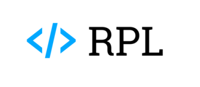
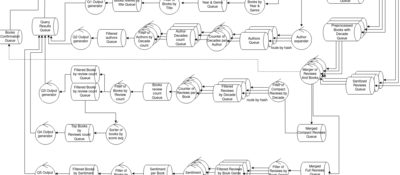
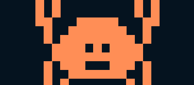
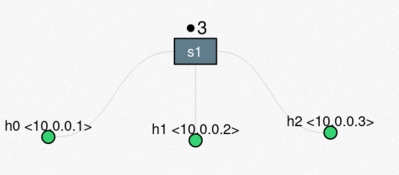
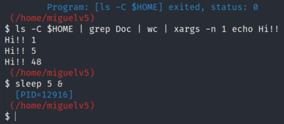
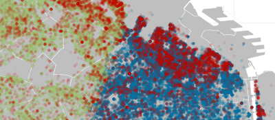

Hi, I'm Miguel Vasquez.
I am a graduate of my alma mater 🖤, where I completed my studies in Computer Science and Engineering.
I possess a deep affection for this fascinating field in its entirety; hence, I find great joy in constantly learning and sharing its knowledge. This page showcases some of my most significant projects, all developed throughout my studies and personal endeavors. May you find them interesting! I wish you a great day wherever you are.
Projects

RPL 3.0 | Senior Engineering Thesis
Maintained and overhauled an open-source platform serving 5k+ active users and ~400k code-execution submissions per quarter. Built a sandboxed runner for asynchronous multi-language execution (C, Python, Rust, Go). Led zero-downtime data migration through multiple MySQL major updates alongside database-per-service schema separation, all whilst preserving legacy records. The system leverages automated GCP (GKE) infrastructure with Terraform and Kubernetes via CI/CD pipelines, including autoscaling and secure inter-service auth (mTLS), as well as a full-stack entrypoint.

Amazon reviews' data analysis via distributed computing
A distributed system for processing and analyzing large datasets of Amazon books reviews in parallel, built with a fleet of dockerized Python controllers and RabbitMQ as a message broker. It implements an architecture akin to MapReduce, as main nodes distribute the workload among multiple workers and replicas categorized by responsibilities. The system is designed to be scalable and fault-tolerant, with the ability to manage highly unstable networks/environments by properly handling catastrophic failures without losing neither data integrity nor throughput consistency.

Ferris Torrent
A BitTorrent client supporting multiple concurrent peers, and a custom tracker server with a simple static web interface for basic stats of its peers. Both implemented in Rust while keeping external crate usage to a strict minimum (TLS, GTK, logging, json) in order to properly handle real-world network conditions and adhere to documented protocol specifications without relying on third-party implementations.

FileTransfer + RDT
A CLI File Transfer app implementing a custom RDT protocol on top of UDP, able to handle packet loss. Written in Python and used to analyze custom protocol behavior within a simulated network via Mininet. A custom Wireshark dissector made in Lua is also provided.

Low level OS Utilities
Implementation of multiple low-level system utilities in C developed at the University of Buenos Aires. Includes a custom shell, a memory allocation library, a process scheduler for the JOS kernel, and a FUSE filesystem.

Properties' pricing analysis
A data science project consisting of analysis and model training from a dataset of properties for sale in Buenos Aires, Argentina. It includes full data preprocessing, clustering, classification and regression models, presenting the results and insights obtained from the record exploration and model evaluation with visualizations and metrics.